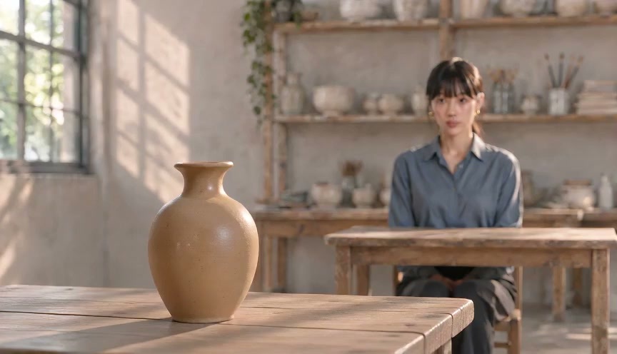
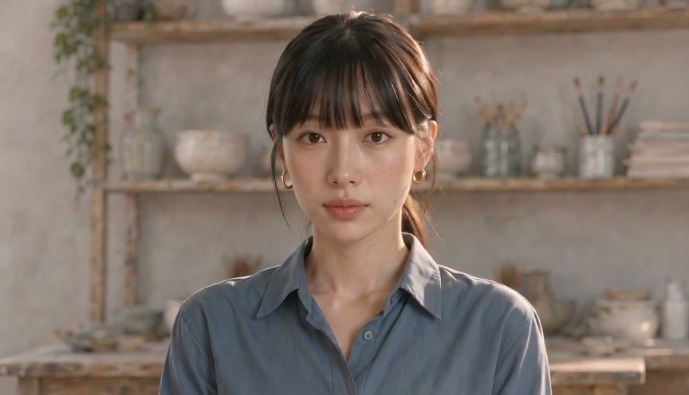
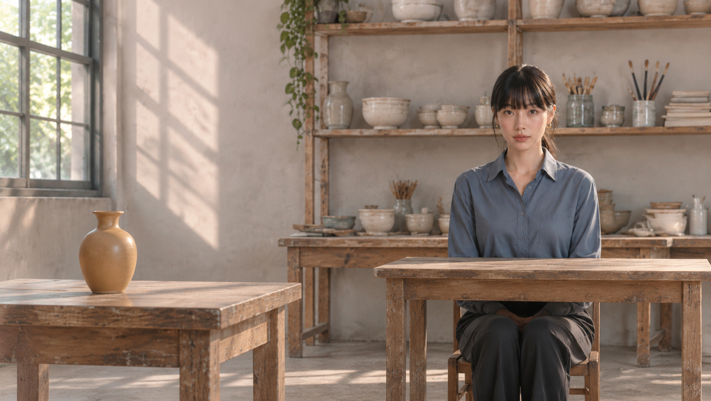
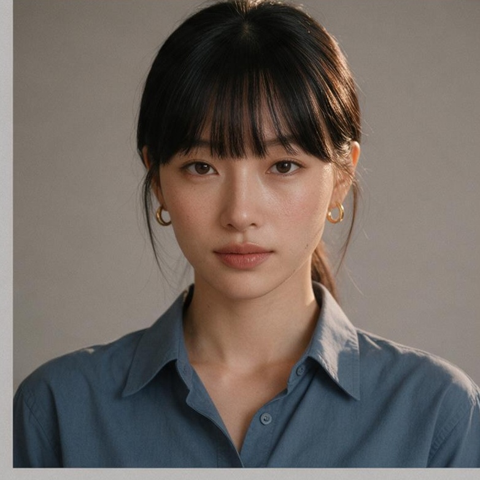
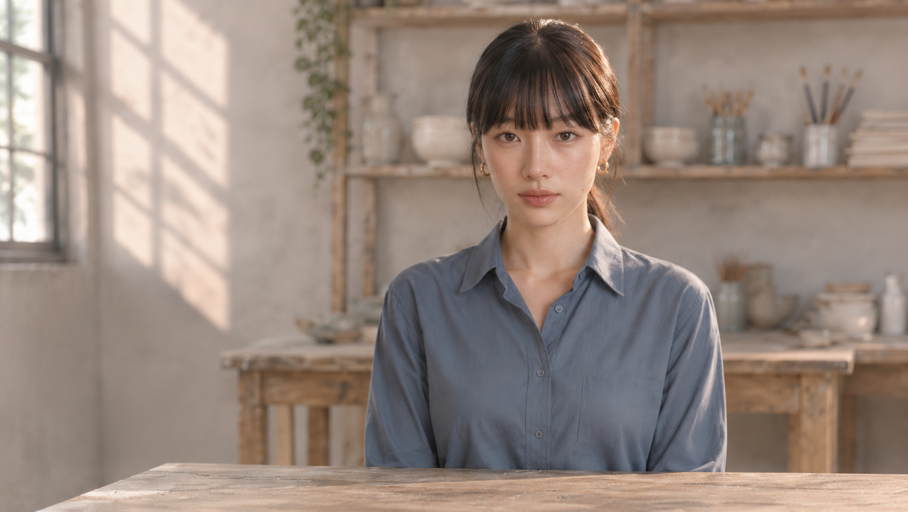

TEIN / LOW ANGLE REVEAL / G2 · G3 DRAFT / 2026.11.19
앞 오브제에서,
뒤 Claire로.
앞 테이블의 작은 오브제에서 출발해 뒤편 별도 테이블의 인물을 드러내는 실사 이동 초안입니다.
Tein API · GPT Image2 고화질2K 스틸 · Seedance2Mini480p 요청, 소리 포함6초. 원래 Claire 얼굴·선명한 새 공간·종료 구도를 각각 참조했습니다. 첫/끝 프레임 방식의 보완 전 영상은 이력으로 구분했습니다.
이번 실제 비용 USD0.3880 / 별도 집행 상한USD0.40. 이전 재작업USD0.3766/0.40와 분리 정산했습니다.
이동과 초점 전환이 함께 바뀌는 연출이며, 고정 카메라의 순수 초점 A/B가 아닙니다. 생성 인물의 최종 동일성·원음 청취 확인·720p G5는 사용자 검토 전입니다.
분류: E10 카메라 이동의 보조 예시. E02 고정 초점 비교는 미완료입니다. Claire 참조 팩과 다음 검증 범위 ↗
이동하는 장면을 먼저 보세요.
포스터는 실제 영상 5.5초 프레임입니다. 개별 영상 재생
앞 테이블의 오브제와 뒤 테이블 인물이 분리되어 보입니다. 카메라가 접근할 때 앞 테이블·오브제가 먼저 왼쪽으로 빠지고 뒤 인물은 더 크게 남아, 두 거리층의 이동 차이를 보여 줍니다. 후반4–6초는 보완 전보다 닫힌 입과 차분한 눈 모양에 가까워져 원래 Claire·종료 스틸에 대조하기 좋은 구간입니다. 사용자 최종 동일성 판정은 남아 있습니다.
검토 초안의 남은 편차: 약1.5–3.5초에 입이 잠시 벌어지고, 이동 중 시선이 렌즈를 즉시 따라오지 않는 구간이 있습니다. 인물은 초반부터 읽혀 계획한1.5–3초의 순수한 초점 교환이 강하게 분리되지는 않습니다. 정확한 카메라 높이·거리·렌즈를 측정한 결과가 아니며, 카메라 이동과 초점이 함께 바뀌는 연출입니다. 이 편차를 숨기기 위해 얼굴 교체·프레임 고정·블러 합성으로 수정하지 않았습니다.


선명한 얼굴과 두 테이블부터



원본 크기 스틸: 공간 스틸 · 초기 시작 스틸 보관 · 종료 스틸 · 헤어·셔츠만으로 동일성 통과를 기록하지 않았으며 자동 동일인 판정이나 사용자 확정은 아닙니다.


각 테이크의 원음과 검수 한계
이 테이크가 생성한 고유 원음에 일정한 +15.9dB 음량 보정만 적용했습니다. 전 구간 오디오 에너지와 클리핑 없음은 기술적으로 확인했습니다. 실제 소리의 자연스러움·명료도에 대한 청취 확인은 사용자 검토 전입니다.
영상은 스트림 복사했으며 샤픈·보간·블러·다른 테이크의 환경음·유료TTS·음악으로 결함을 덮지 않았습니다. 도해의82cm·45mm·이동 거리는 연출 목표이며 AI 출력의 실제 광학·거리 측정값이 아닙니다.
실제 요청·수정 이력과 정산
2K 고화질 실제 이미지 단가는USD0.0457로 확인했습니다. 최초1K 표시 가격USD0.0274를 수정해 이후 예약에 반영했습니다.
LA-proof-v1 · 미선택
succeeded · USD0.0457
A photographed live-action frame, using reference image1 only for the established adult Claire face, age impression, hair, earrings and blue-gray shirt. Do not inherit the portrait crop or background. A low object-level camera looks through one quiet workshop: a normal14cm matte ochre bud vase rests on a separate small timber table in the near-left foreground; Claire sits at a SECOND table farther back and staggered to the right. Each table has its own edge and legs, with open space between them. One continuous wall, shelves and soft side-window light connect the room. The camera is about82cm high,45mm lens look, with a modest upward view of the seated person and her whole head inside frame. This is the sharp identity/geography PROOF: keep her eyes and facial features legible and both table boundaries readable. Hands rest out of view, lips closed, actual lens gaze, natural skin and cloth at this distance. No new person, facial reshaping, extra prop, merged table, text or logos. Identity is checked against the original reference before any shallow-focus derivative is accepted. This sharp proof must depict EXACTLY the adult Claire from image1, preserving her particular eyes, nose, lips, jaw and adult age impression; do not replace her with a generic person with similar bangs. Same natural broad shoulder proportions, without facial beautification or age change. The whole head and the near vase are inside frame. Leave a clear lateral gap between the two staggered tables, with each table’s own outer edge and legs visible. Her relaxed face points toward the actual low camera lens. This is a new photographed workshop scene, not a portrait pasted onto a background.
LA-proof-v2 · 검토 선택
succeeded · USD0.0457
A photographed live-action scene edit. Image1 establishes the newly reviewed Claire face, blue-gray shirt, window light and workshop materials. Image2 is the original Claire identity portrait: preserve her specific eyes, nose, mouth, jaw and adult impression; do not inherit its portrait framing/background. Fix the spatial layout so the two tables are unmistakably SEPARATE. Pull the camera view back to a wider low object-level view of the same room, with a45mm lens look at about82cm height. Claire now appears smaller in the upper-right background, her whole head around ONE FIFTH of the image height, facing the actual lens with closed relaxed lips. Keep her face SHARP for identity inspection. She sits behind her own rear table. The small60cm-square NEAR table occupies only the LEFT THIRD of frame and ends well before the center. One normal14cm ochre vase sits on it, with its whole base and rim visible. Remove the unwanted flowers/branches: the vase is empty. The REAR table sits about one metre farther back, staggered right, occupying the RIGHT half. Leave a broad, clearly visible OPEN GAP between the right edge of the near table and the left edge of the rear table, with their separate legs and the shared floor visible through it. No touching, overlapping or connected tabletops, no continuous counter. Maintain the same one continuous workshop wall, window and shelving so the furniture belongs to one room. Both table boundaries and the woman’s eyes remain legible and sharp in this spatial proof. Preserve identity, natural skin/cloth, light direction and exposure. No added people, text or logos.
LA-end-v1 · 검토 선택
succeeded · USD0.0457
A photographed live-action derived view. Image1 supplies the reviewed two-table workshop, the same Claire, shirt, vase, furniture and soft window light. Image2 supplies the original established Claire face/identity only; do not inherit image2 portrait crop/background. Preserve Claire’s particular eyes, nose, lips, jaw and adult impression. Move only the viewpoint along the open space to the RIGHT of the near-left table, about65cm right and150cm forward, keeping the camera about82cm high and the same45mm lens look. Now see a closer medium view of Claire behind the REAR table, whole head including hair inside frame, relaxed shoulders and closed lips. She faces and looks at this actual low camera lens without tilting her head back. The near vase and its table have passed out of view LEFT; the rear table remains directly in front of her. Her eyes and facial details are sharply focused; the room behind is softly defocused. Preserve table positions, workshop architecture, light direction/exposure and natural skin/cloth. No facial reshaping, extra person, table merging, text or logos.
LA-start-v1 · 검토 선택
succeeded · USD0.0457
A photographed live-action focus-only edit of the reviewed sharp workshop scene in image1. Image1 owns the exact camera position, framing, woman’s identity, pose, two separate tables, vase position/contact, architecture and window light. Keep every object and the full head and vase in exactly their original place and size. Change ONLY optical focus to the near vase: its rim/body are sharply resolved, while the seated woman on the second table plane behind becomes visibly out of focus with soft facial details. Preserve her recognizable silhouette and the identity already verified in the sharp source; do not redesign her face. The two tabletop edges and intervening space remain recognizable. No zoom, crop, lighting change, new objects or text.
LA-motion-v1 · 미선택
succeeded · USD0.1026
Animate the approved new two-table start frame as one continuous six-second live-action reveal, arriving at the supplied approved end frame. Keep the established Claire, wardrobe, room, normal vase size, both tables and window light.0–1s: hold the near vase sharp and the seated person behind soft.1–4.5s: the camera physically slides diagonally RIGHT and FORWARD along the clear aisle beside the near table, staying at the same low object-level height; no zoom, rise, orbit or cut. The nearby vase and its table pass out of frame to the left faster than the rear table and person.1.5–3s: transfer focus once to her eyes.4.5–6s: settle on the same Claire behind the second table, her whole head visible and eyes sharp. She follows the actual moving lens with small eye movements, a quiet breath and brief blinks; minimal head turn, no look down at the prop, no prolonged eyes closed. Generate this take’s own continuous workshop room tone and quiet breath; no dialogue, music or focus sound effect.
LA-motion-v2 · 검토 선택
succeeded · USD0.1026
One continuous six-second photographed live-action reveal. REFERENCE ROLES: Image1 is the ORIGINAL Claire and owns her exact identity, adult age impression, eyes, nose, mouth, jaw, hair and earrings. Image2 owns the newly reviewed workshop, two SEPARATE staggered tables, small empty ochre vase, wardrobe and opening view. Image3 owns the same Claire’s face in the closer final angle, closed lips and relaxed expression, in the same room. Preserve this specific woman throughout; do not redesign her face as the camera approaches. A single slow diagonal-right and forward camera slide along the clear aisle beside the near-left table, at low object-level height throughout, ending on Claire behind the rear table.0–1s hold the opening view with the near vase sharp.1–4.5s physically translate right and forward; the near vase/table pass out of frame LEFT faster than the rear person and furniture. During1.5–3s, transfer focus once toward her eyes.4.5–6s hold the closer medium view suggested by image3, whole head visible, eyes sharp, same facial proportions and calm expression. No zoom, cut, dissolve, camera rise, facial morph or object sliding. Claire calmly meets the ACTUAL moving lens with only small eye corrections. Her head keeps its reference orientation, eyes remain naturally relaxed rather than widening, lips stay softly CLOSED throughout, with brief ordinary blinks and gentle nasal breathing. No surprised reaction, mouthing words, head turn or glance away. Generate this take’s own continuous quiet workshop room tone and breath; no speech, music or lens-motor effect.
보완 전 LA-motion-v1 · 검토 이력
첫/끝 프레임 방식의 첫 결과입니다. 두 테이블·이동은 보이나 후반 얼굴 인상·입·시선이 선명한 종료 스틸에서 벗어나 현재 선택에서 제외했습니다.
이 테이크 고유 원음에 +23.3dB 일정 보정만 적용했습니다.